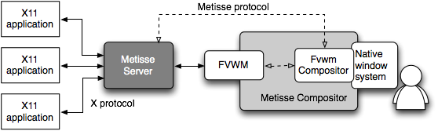

The Metisse window system follows a compositing approach, making a clear distinction between the rendering of windows and the interactive compositing process. The Metisse server is a modified X server that renders windows off-screen. The Metisse compositor is a combination of a slightly modified version of FVWM with an OpenGL-based interactive viewer called FvwmCompositor. FvwmCompositor runs as an FVWM module connected to both the Metisse server and your native window system (a traditional X server or the OS X WindowServer). Among other things, FvwmCompositor displays window images received from the Metisse server and forwards to it native input device events (Figure 1).

The Metisse server can be started from a terminal with the Xmetisse command:
Xmetisse -geometry 1024x768 -ac :1
In this example, the server is configured to emulate a 1024x768 desktop, disable X access control restrictions and listen for incoming X clients on the first X display (i.e. listen on TCP port 6001).
Xmetisse -help will give you the full list of supported options.
The -depth 16 -pixelformat rgb565 options, for example, allow to switch the internal pixel format to a 16 bits encoding (instead of a default 24), reducing network bandwidth when the server and the compositor run on different machines.
The -rfbauth option allows you to specify a VNC password file to be used to authenticate Metisse compositors that connect to the server (e.g. -rfbauth $HOME/.vnc/passwd).
As a result of the system architecture, starting the compositor actually consists in attaching to the Metisse server a properly-configured instance of FVWM that will in turn execute the FvwmCompositor module. The metisse-start-fvwm will do just that. It will also create a default FVWM configuration for you in ~/.fvwm-metisse if it doesn't find one the first time you run it. To connect to the server launched in the previous step, just type:
metisse-start-fvwm -wd :1
The metisse-start-fvwm -help will give you the list of options supported by the script. The general syntax is the following:
metisse-start-fvwm [options] -- [FvwmCompositor options] -- [fvwm options]
FvwmCompositor options include:
-t disables the use of OpenGL's stencil buffer to render shaped windows. This may slow down the compositor but it might also solve problems with applications like xeyes, xine or xmms.
-C enables a software cursor. This might solve some rendering problems and allows to create screenshots that show the cursor.
-p enables the use of OpenGL's mipmapping functions. This will use more memory but might produce better renderings of transformed windows.
-n enables non-power-of-two texture support. This might improve performance and reduce memory usage but might also cause rendering problems on some graphics hardware.
-m disables shared memory communication with the server
-s disables window shadows
Running Metisse inside your usual desktop environment is likely to cause problems at some point because of conflicting mouse or key bindings. Once a convinced Metisse user, you might want to replace your original desktop with a Metisse-based one.
A simple way of doing this for old-style people who still use startx is to put something like this in your .xinitrc file (rxvt could be replaced by xterm or any other terminal application):
Xmetisse -ac -depth 16 -geometry 1680x1050 :1 >& .Xmetisse-log &
metisse-start-fvwm >& .compositor-log &
rxvt # this will allow you to terminate this session by typing "exit" and to
# restart the compositor using metisse-start-fvwm if it ever crashes
killall Xmetisse
If you want to run a Gnome session using Metisse, use the following .xinitrc.
prefix=/path/to/metisse/prefix (if you installed using --prefix)
# run Xmetisse
geom=`xdpyinfo | awk '$1 == "dimensions:" { print $2 }'`
$prefix/bin/Xmetisse -geometry $geom -ac :1 &
# run gnome-session with fvwm
export DISPLAY=":1"
export PATH="$prefix/bin:$PATH"
export WINDOW_MANAGER="$prefix/bin/metisse-start-fvwm -- -d :0 -- --sm-client-id default0"
export AT_SPI_DISPLAY=":1"
export XKL_XMODMAP_DISABLE=1
eval `/usr/bin/dbus-launch --exit-with-session --sh-syntax`
gnome-session
Your local X11 guru might be able to figure out a similar solution if you're using a display manager (e.g. KDM or GDM).
Note that although the Metisse compositor is currently implemented as an FVWM module, the system is desktop agnostic. People interested in using a particular environment (e.g. GNOME, KDE) are invited to contribute the necessary configuration files or scripts.